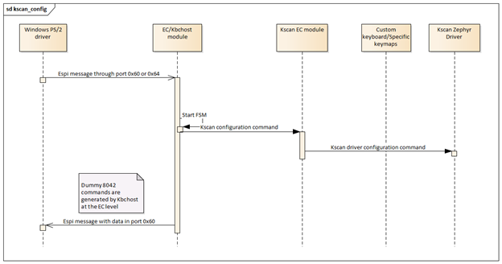

Add custom keyboard matrix¶
Introduction¶
This application note describes the requirements and implementation details to use a custom keyboard matrix.
Note
Do refer to details in keyboard matrix and HW supported overview in ../supported_hw.rst Currently 2 keyboards are supported. Fujitsu keyboard can be connected in MECC card and be used in Tigerlake RVP, meanwhile Gtech keyboard can be used with Intel ADL-P RVP
Overview¶
The keyboard scan matrix state and data are represented in this reference code as an application module. The module depends on Keyboard System Controller Host to receive configuration commands and to send keyboard events back to the host.

Similarly, it depends on the underlying Zephyr driver to perform scanning of the keyboard matrix module and provide keyboard events indicating row and column data. The Zephyr RTOS driver tracks which keys in the matrix are still pressed and which ones are being released. This data is relayed to the kscan application module in the form of callbacks. Once the callbacks are received, the application module translates grid coordinates to scan codes and queues them in the same queue used for sending PS/2 scan codes. See the image below for more details.

How to implement a new keyboard¶
This section indicates specific step-by-step instructions to add a new keyboard to the EC application for custom board. It covers how to introduce specific key map for a different keyboard vendor as well as how to define custom FN+FX keys.
Adding a new keyboard to the build system¶
Every new keyboard must implement the keyboard API. Refer to kbs_keymap.h. The map instantiation is done through a factory function, so the new keyboard must be added there.

inline struct km_api *keymap_init_interface(void)
{
#if defined(CONFIG_EC_GTECH_KEYBOARD)
return gtech_init();
#elif defined(CONFIG_EC_FUJITSU_KEYBOARD)
return fujitsu_init();
#else
return NULL;
#endif
The keyboard specific map shall be included in the project configuration. The configuration hierarchy is organized in a way that allows to choose between several keyboard brands using the interactive menu if desired.

choice
prompt "Select your keyboard"
default EC_GTECH_KEYBOARD
help
Select your keyboard implementation which is going
to allow you to handle variations specially in
alternate functions.
config EC_GTECH_KEYBOARD
bool "Gtech keyboard"
config EC_FUJITSU_KEYBOARD
bool "Fujitsu keyboard"
if (CONFIG_KSCAN_EC OR CONFIG_PS2_KEYBOARD_AND_MOUSE)
if (CONFIG_EC_GTECH_KEYBOARD)
target_sources(app
PRIVATE
${CMAKE_CURRENT_LIST_DIR}/gtech_keymap.c
)
endif()
if (CONFIG_EC_FUJITSU_KEYBOARD)
target_sources(app
PRIVATE
${CMAKE_CURRENT_LIST_DIR}/fujitsu_keymap.c
)
endif()
endif()
Map row/column to IBM key numbers¶
This mapping is keyboard specific and it is required for every keyboard, the array is filled like an inverted matrix to simplify read 8 KSIs. The map must be exposed using the function pointer get_keynum.
Map FN + FX or FN + Any key¶
This is also keyboard specific and it is required when need to assign a function pointer get_fnkey to generate keyboard specific scan codes or SCI codes for the host. Refer to SMC module for details in SCI codes. All the FN keys generating scan codes are using the scan code set 2.
The end-user must decide each behavior for every FN+key, for example FN+F6 is mapped to print-screen. By default, the type is SCAN_CODE and typematic is false. (Officially print screen has typematic).
Finally need to add pressed and released scan codes, considering that for an unmapped SC_UNMAPPED could be used. There is no functionality impact if not done, but this allows to differentiate explicitly unmapped FN key which allows to identify configuration errors.
SCIs do not have break code, and all of them are single byte codes. In general, it is possible to generate any desired FN+ key combination, this is not limited to the top row or the arrow keys. You can implement custom behaviors in for the EC using FN functions as well.